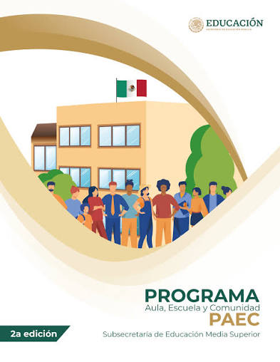

Nuestro Propósito
Buscamos concientizar a la comunidad sobre el abandono animal y ofrecer una plataforma para conectar animales rescatados con familias amorosas.
Bienvenido a Huellitas Comunitarias. Somos un proyecto escolar enfocado en promover el bienestar animal, la adopción responsable y el apoyo a refugios locales mediante colectas de suministros.

Buscamos concientizar a la comunidad sobre el abandono animal y ofrecer una plataforma para conectar animales rescatados con familias amorosas.
Todos los animales merecen un hogar digno, alimentación y cuidados veterinarios. Promovemos la esterilización como solución ética al sobrepoblamiento.
Puedes formar parte del cambio adoptando a un perrito o gatito, o bien realizando donaciones de insumos en nuestro centro de acopio.